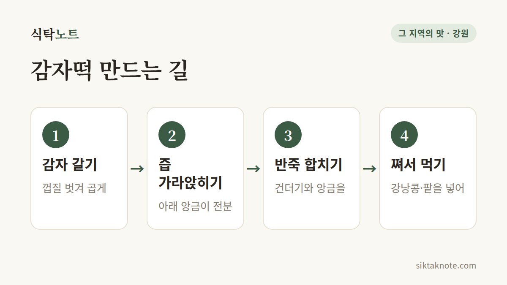

감자떡 이야기 — 쌀이 귀했던 강원도 산골이 빚은 떡

3줄 요약
- 감자떡은 감자를 갈아 건더기와 가라앉힌 전분을 합쳐 쪄낸 강원도 대표 향토 떡이에요.
- 쌀이 귀한 산간 지역에서 감자로 만든 음식이라고 알려져 있어요.
- 소로 강낭콩이나 팥을 쓰고, 지역에 따라 곁들이는 음식과 만드는 방식이 달라요.

감자떡이란
감자떡은 강원도를 대표하는 향토 떡이에요. 쌀가루가 아니라 감자로 만들어요. 감자를 갈아서 건더기와 전분으로 나눈 뒤, 둘을 다시 합쳐 반죽하고 쪄내요. 쫀득하면서 은은하게 구수해서 한 번 먹어 보면 쉽게 잊히지 않는 맛이에요.

만드는 법
한국민족문화대백과사전에 소개된 방식을 쉽게 풀면 이래요.
- 감자 껍질을 벗기고 곱게 갈아요.
- 간 감자를 체나 베보자기에 걸러 건더기와 즙으로 나눠요.
- 즙을 가만히 두면 아래에 하얀 전분이 가라앉아요. 윗물은 따라 버리고 앙금만 남겨요.
- 건더기와 가라앉힌 앙금을 합쳐 반죽해요. 불린 강낭콩을 넣기도 해요.
- 시루나 찜기에 쪄요. 따뜻할 때 설탕을 찍어 먹기도 해요.

감자송편이라는 사촌도 있어요
전분을 말려 가루로 만든 뒤 반죽해서 송편처럼 빚는 방법도 있어요. 팥 같은 소를 넣어 빚는데, 색이 더 어둡고 투명한 편이에요. 감자떡과 감자송편은 넓게 보면 같은 가족이에요.
왜 감자떡이었을까요
감자는 조선에 19세기 초중반 무렵 들어온 것으로 알려져 있어요. 임진왜란 때 들어왔다는 이야기가 있지만 그 시기의 기록은 찾기 어렵다고 해요. 감자는 척박한 땅에서도 잘 자라서 산간 지역에 빠르게 퍼졌고, 논이 적어 쌀이 귀했던 강원도 산골에서는 소중한 먹거리가 되었어요.
저장하기 어려웠던 감자를 오래 두고 먹으려고 전분으로 만들어 두었고, 그것이 떡이 되었다는 이야기가 전해져요. 정확한 시기를 알려 주는 기록은 많지 않아서, 이 부분은 "그렇게 알려져 있다"고 보시는 게 맞아요.
지역마다 달라요
- 강릉: 간을 하지 않은 팥소를 넣고, 쪄낸 뒤 겉에 기름을 살짝 바르기도 해요. 무장아찌나 물김치와 곁들여 먹는다고 소개돼요.
- 일부 산간 지역: 감자를 한동안 삭혀서 만들었다는 이야기가 있어요. 냄새가 강해서 요즘에는 하지 않는 곳이 많다고 해요. 이건 신문 보도에서 소개된 이야기라 지역과 집안마다 다를 수 있어요.
- 소: 불린 강낭콩이나 팥이 흔하고, 깨를 쓰기도 했다고 해요.
같은 감자로 만든 음식들
강원도 감자 음식으로는 감자옹심이도 빼놓을 수 없어요. 감자를 갈아 전분과 섞어 작은 공으로 빚고, 멸치와 다시마로 우린 국물에 끓여 먹어요. 떡이든 국물이든, 같은 재료를 다르게 요리한 거예요.
먹을 때 알아두면 좋은 것
감자떡은 갓 쪄서 따뜻할 때 가장 말랑하고 맛있어요. 식으면 단단해지는데, 이건 굳은 떡을 말랑하게 살리는 법에서 설명한 전분의 노화 때문이에요. 남았다면 냉장고 말고 냉동실에 넣고, 먹을 때 찜기에 다시 쪄 주세요.
강원도에서 감자떡은 간식이면서 오래된 생활의 지혜가 담긴 음식이에요. 이번 주말에 강원도에 간다면 시장에서 한 번 찾아보세요.